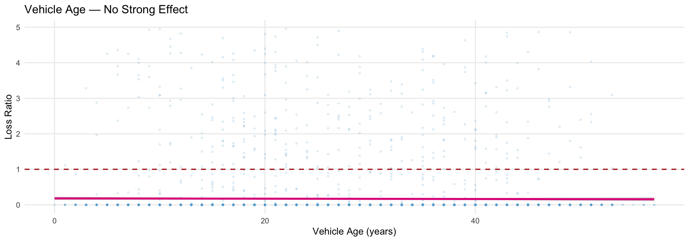
Profitability and Volatility Investigation
2026-05-16
Dataset
Core Metric
\[\text{Loss Ratio} = \frac{\text{Total Incurred}}{\text{Total Premium}}\]
Research Questions
Methods
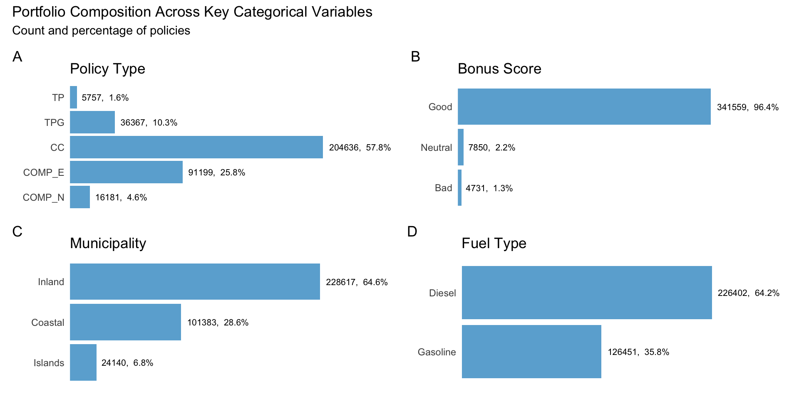
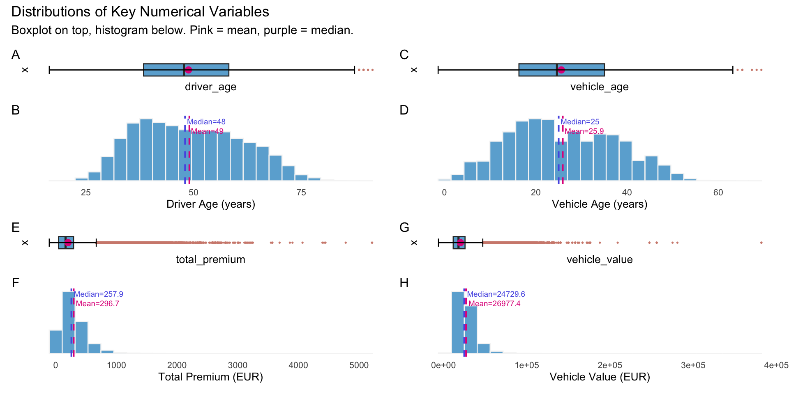
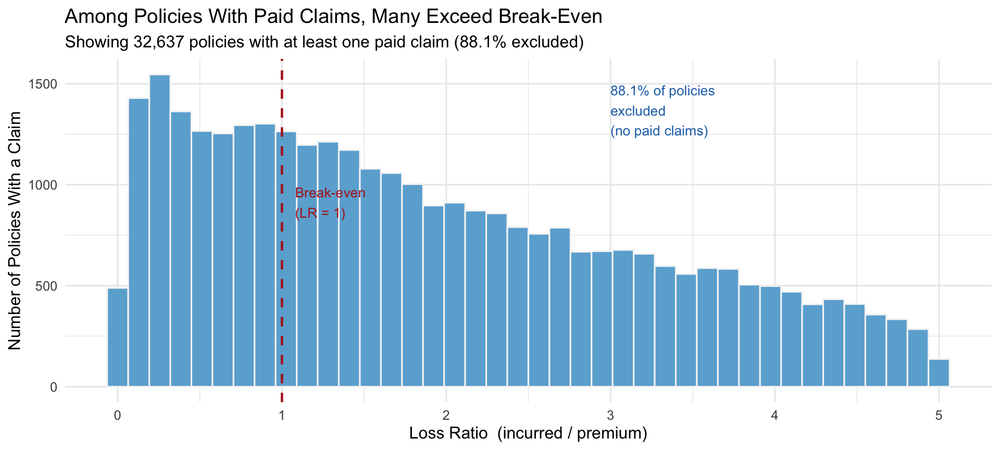
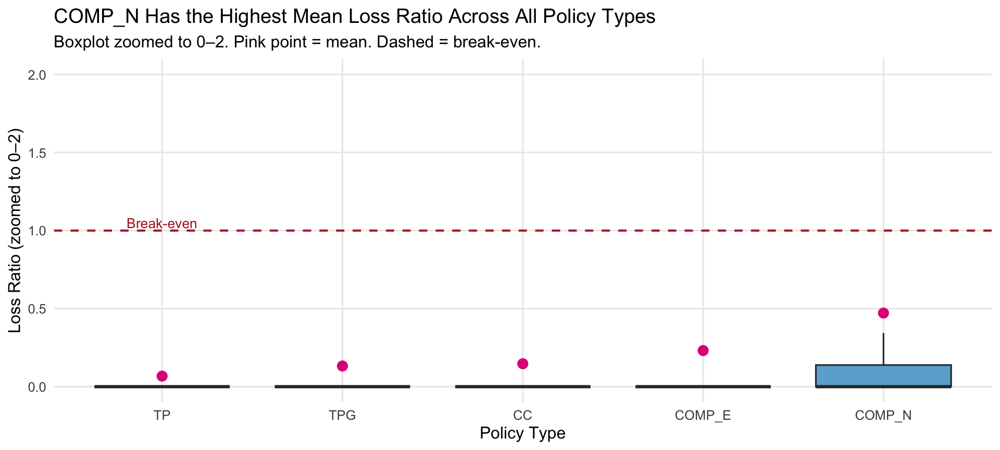
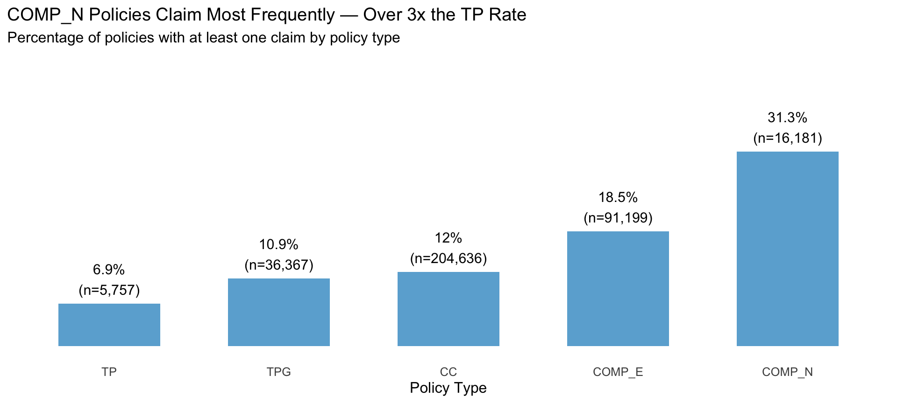
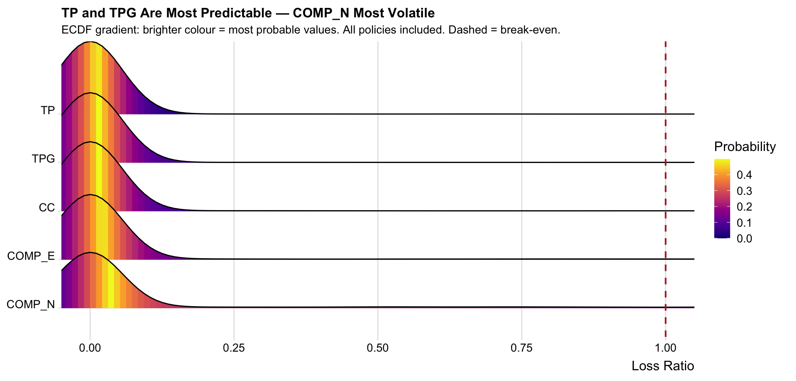
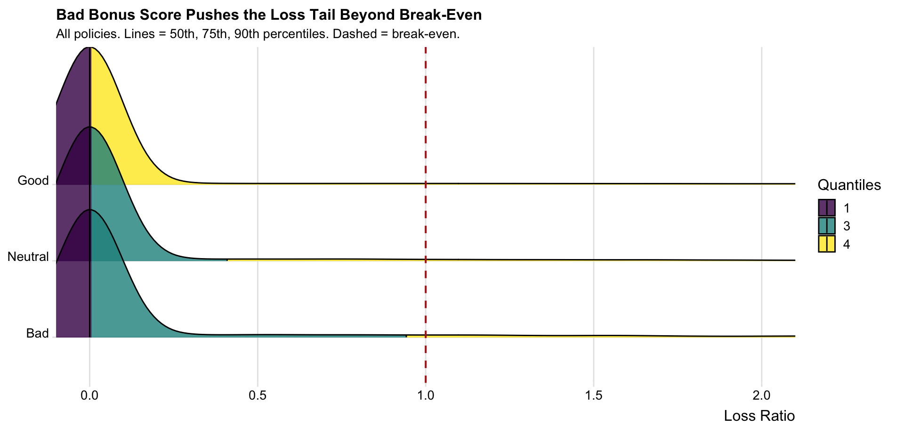
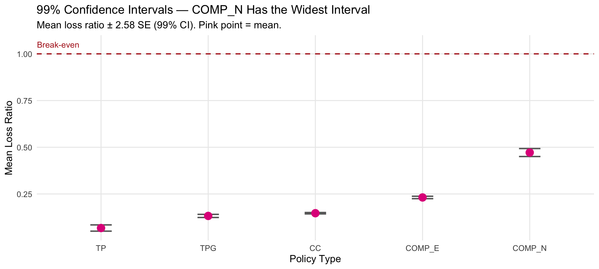
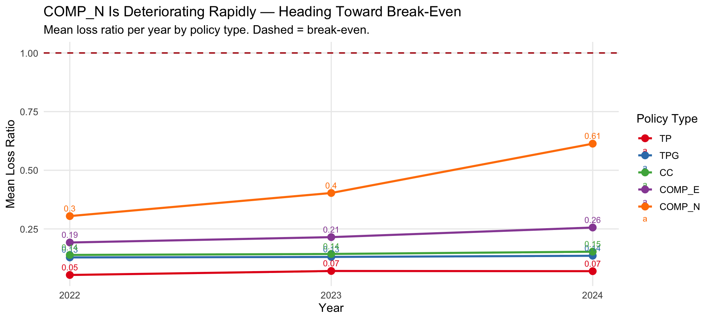
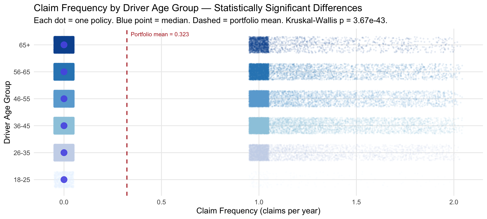
Vehicle Age vs Loss Ratio

Geography — Municipality Type
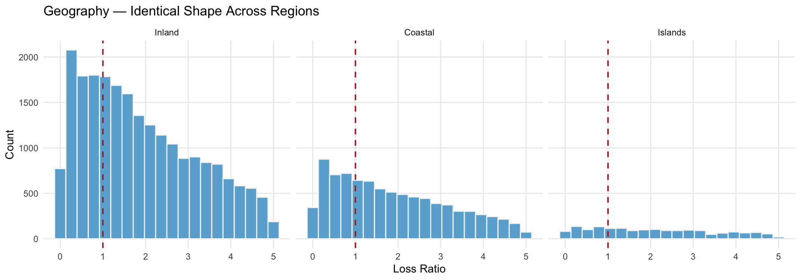
| Finding | Evidence | Action |
|---|---|---|
| Portfolio is profitable overall | 88% zero-claim policies; mean LR well below 1 | Maintain current strategy |
| COMP_N loss ratio deteriorating | Rose from 0.30 to 0.61 in 3 years; claim rate 31.3% | Urgent repricing required |
| COMP_N most volatile segment | Widest IQR, widest 99% CI, flattest ridgeline | Add volatility loading to COMP_N premium |
| Bad bonus score predicts tail risk | 90th pct crosses break-even; p = 1.35e-94 | Use bonus score aggressively in pricing tiers |
| Older drivers claim more | Kruskal-Wallis p = 3.67e-43 | Apply age-based pricing differentiation |
| Vehicle age and geography: weak drivers | Flat regression; identical facet shapes | Deprioritise in pricing models |
ISSS608 Visual Analytics | Take-Home Exercise 1